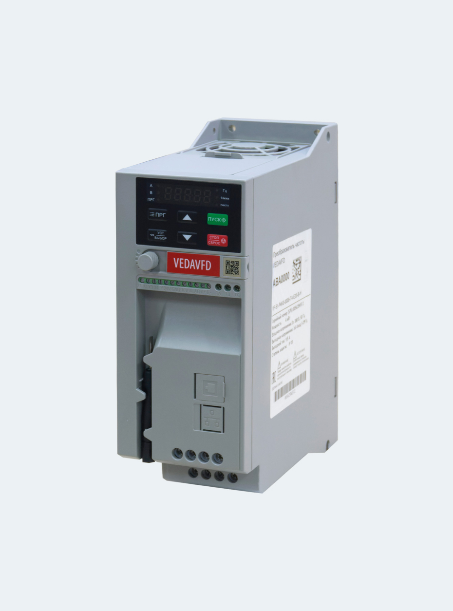

<div class="product-top">
    <div class="container">
        <div class="product-top__left">
            <div class="product-slider">
                <div class="product-slider__main">
                    <div class="swiper-wrapper">
                        <div class="swiper-slide">
                            <div class="product-img">
                                
                            </div>
                        </div>
                    </div>
                </div>
                <!-- <div class="product-slider__thumbs">
                    <div class="product-slider__thumb">
                        
                    </div>
                    <div class="product-slider__thumb">
                        
                    </div>
                    <div class="product-slider__thumb">
                        
                    </div>
                    <div class="product-slider__thumb">
                        
                    </div>
                </div> -->

            </div>
        </div>
        <div class="product-top__right">
            <div class="product-info">
                <h3 class="product-info__title">Преобразователь частоты VEDA серии VF-51</h3>
                <div class="product-info__price info-price">
                    <div class="info-price__current">21 710 руб</div>
                    <div class="info-price__old">19 539 руб</div>
                </div>
                <p class="product-info__descr">
                    Преобразователь частоты VF-51 – устройство, которое применяется для управления насосами, вентиляторами, а также для автоматизирования технологических процессов. Его функционал позволяет работать как при напряжении питания в 1х220В, так и 3х380В, обладая диапазоном от 0,75 до 22 кВт. Для интеграции в сетевую инфраструктуру VF-51 оснащен встроенным интерфейсом RS-485.
                </p>
                <div class="product-info__select voltage-select">
                    <span class="voltage-select__selected">Выберите напряжение</span>
                    <ul class="voltage-select__list">
                        <li class="voltage-select__item"><button class="voltage-select__btn btn-reset">220 В</button></li>
                        <li class="voltage-select__item"><button class="voltage-select__btn btn-reset">380 В</button></li>
                    </ul>
                </div>
                <div class="product-info__select power-select">
                    <span class="power-select__selected">Выберите мощность</span>
                    <ul class="power-select__list">
                        <li class="power-select__item"><button class="power-select__btn btn-reset">0,75</button></li>
                        <li class="power-select__item"><button class="power-select__btn btn-reset">1,5</button></li>
                        <li class="power-select__item"><button class="power-select__btn btn-reset">2,2</button></li>
                        <li class="power-select__item"><button class="power-select__btn btn-reset">4</button></li>
                        <li class="power-select__item"><button class="power-select__btn btn-reset">5,5</button></li>
                        <li class="power-select__item"><button class="power-select__btn btn-reset">7,5</button></li>
                        <li class="power-select__item"><button class="power-select__btn btn-reset">11</button></li>
                        <li class="power-select__item"><button class="power-select__btn btn-reset">15</button></li>
                        <li class="power-select__item"><button class="power-select__btn btn-reset">18,5</button></li>
                        <li class="power-select__item"><button class="power-select__btn btn-reset">22</button></li>
                    </ul>
                </div>
            </div>
        </div>
    </div>
</div>